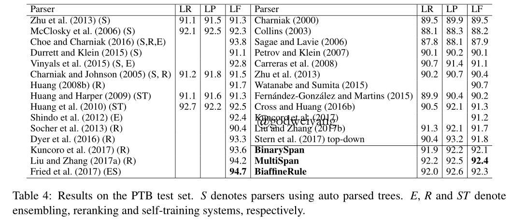

我们究竟是活了365天，还是活了1天，重复了364遍。
论文地址：Two Local Models for Neural Constituent Parsing
代码地址：github
今天要介绍的论文来自COLING 2018，本文主要探讨了局部特征对成分句法分析到底有多大的影响，并同时提出了两种局部特征模型，在PTB上面取得了92.4的F1值。
介绍
对于传统句法分析模型，需要使用大量的全局特征来指导每一步的决策。同时全局的损失函数也是必不可少的，可以用来避免预测偏差的问题，也就是loss mismatch问题。但是随着神经网络的加入，越来越多的模型使用了局部的特征来进行句法分析，主要原因是可以采用双向LSTM预先对句子进行编码，从而捕获全部特征。
因此本文主要探讨局部特征对句法分析的影响，顺带提出了两个句法分析模型。模型是chart-based的，但是将结构预测和标签预测分成了两个模型，首先通过双仿射模型来产生一棵无标签的句法树，然后再上面跑一遍Tree-LSTM来产生每一个结点的label。
模型
模型分为两部分，第一部分是无标签模型，用来预测不带label的句法树，第二部分是标签模型，用来在无标签模型预测出来的句法树上预测出每一个结点的label。
对于无标签模型，有两种方法来生成句法树，第一种叫做span模型，预测任意span是否属于标准树，也就是二分类。第二种叫做rule模型，也就是普通的chart-based方法，类似于CKY算法，预测每个span的得分最高的split。
对于标签模型，在生成的句法树上跑一遍Tree-LSTM，计算出每个结点的向量表示，这是Encoder部分。然后对于每个结点，运行一遍Decoder，也就是一个LSTM，解码出该结点处的label，如果label只有一个，那么就解码出“X - <\L>”，其中<\L>是结束符，而如果label不止一个，也就是一元产生式，那么就会解码出一系列非终结符。
下面我们一个个介绍编码和解码模型，我尽量不使用太多的公式来解释模型，一是因为本质上模型也都是很老的了，二是因为公式太多了我也懒得打嘻嘻。
Span模型
主要思想就是对于句子的每一个可能的span，预测它是否属于标准树，属于标签就是1，不属于就是0。因为一共有$n(n + 1) / 2$个span，所以时间复杂度为$O(n^2)$。在代码实现中，因为长度为1和长度为n的span一定属于标准树，所以不考虑这两种span。
模型通过一个双向LSTM来对短语进行编码，这个之前的文章已经说过很多次了，可以用来捕获全局信息。span$(i, j)$的向量表示和之前略有不同，这里不是用两端的差值，而是改用直接拼接得到：
\[v[i, j] = [f_{i + 1}; r_i; f_{j + 1}; r_j]\]
然后将每个span的表示输入到一个两层的前馈神经网络中，最后通过一个softmax进行二分类：
\[\begin{array}{l}o[i,j] = \tanh ({W_o}v[i,j] + {b_o})\\\\u[i,j] = {W_u}o[i,j] + {b_u}\\\\P({Y_{[i,j]}}|S,\Theta ) = softmax(u[i,j])\end{array}\]
其中$Y_{[i, j]}$可以取值1或者0，最终要使得正确span标签为1的概率与错误span标签为0的概率之和最高。
训练完毕之后，在预测阶段，使用CKY算法求解最优的句法树。注意这里不能直接采用$Y_{[i, j]} = 1$概率比较大的那些span组成句法树，因为可能根本就是一棵不合法的句法树。对于span$(i, j)$，它的split为k的概率为：
\[P(r|S, \Theta) = P(Y_{[i, k]} = 1|S, \Theta)P(Y_{[k + 1, j]} = 1|S, \Theta)\]
模型还有个扩展版本，就是在softmax层改二分类为预测每个label的概率。然后损失函数也稍做修改，对于每个标准树中的span，对所有label求和（求和主要针对的是一元产生式的多个label），使概率之和最大。在预测阶段解码时，依然使用CKY算法，只不过span的概率要修改为：$Y_{[i, j]} = 1$的概率为label不为终结符的概率之和，$Y_{[i, j]} = 0$的概率为label是终结符的概率。
Rule模型
span模型是训练出每个span属于标准树的概率，然后预测时计算出产生式的概率。而rule模型就直接训练每个产生式的概率，对于span$(i, j)$，假设它的split为k的分数为$ps_k$，那么产生式的概率就为：
\[P([i, j] \to [i, k][k + 1, j] | S, \Theta) = \frac{\exp (ps_k)}{\sum\nolimits_{k’ = i}^{j - 1} {\exp (p{s_{k’}})} }\]
最终的损失函数就是标准树中所有产生式概率的负对数之和。解码依然使用CKY算法，只是这里产生式概率直接得到了，所以直接计算即可。
这种方法本质上其实就是用神经网络来拟合PCFG，得到和它类似的效果，最后再用CKY算法解码出句法树。
而上面的$ps_k$是怎么得到的呢？这里首先还是用双向LSTM的边界差值作为span的表示（我也不知道这里为什么又突然用这个表示了）：
\[s[i, j] = [f_{j + 1} - f_i; r_i - r_{j + 1}]\]
然后将span之前和span和span之后三部分的表示拼接起来：
\[sr[i, j] = [s[0, i - 1]; s[i, j]; s[j + 1, n - 1]]\]
然后将它输入到一个单层前馈神经网络：
\[r[i, j] = \phi (W_r^M sr[i, j] + b_r^M)\]
注意到这里的W和b是分为三种：父结点、左儿子、右儿子。
然后就是最后一步了，终于可以得到最终的span表示了。。。这里又有两种方法，一种是线性模型，直接对左右儿子的r向量加权求和。另一种是双仿射模型，这个方法也可以解决span长度不一导致的类别数可变的多分类问题，双仿射模型得分首先在父结点和左儿子向量上进行操作：
\[lps_k = {[r[i,j];1]^T}{W_{pl}}[r[i,k];1]\]
然后在父结点和右儿子向量上进行类似操作得到$rps_k$，最后相加得到最终的split得分：
\[ps_k = lps_k + rps_k\]
标签生成模型
首先用Tree-LSTM得到每个span的向量表示，然后再通过一个LSTM依次得到span的一个或者若干个label，这个就不详细解释了。
联合训练
整个模型总的损失函数是无标签模型损失加上标签生成模型的损失，其中无标签模型分为三种：二分类、多分类、rule模型。
整个模型的流程如下图所示：
span模型和rule模型的span得分计算如下图所示：
实验结果
几种模型在PTB上的F1值如下：
可以看出对于二分类span模型，用$v[i, j]$作为span表示效果最好，而对于rule模型，采用的是双仿射，那么用$sr[i, j]$，也就是拼接上span左右的span效果更好。总体来说，多分类的span模型F1值是最高的。
而和其他模型的比较如下表所示：

左侧是多模型融合的结果，右侧是单模型，本文的几个模型结果都是最高的。
总结
这篇论文模型和变体有点多，其实仔细分析下来可以发现本质上也还是那么些东西，在这里简单总结一下几种模型：
首先是结构预测：
- 二分类span模型：预测每个span属于标准树的概率，测试阶段使用CKY算法解码，通过span正确的概率计算得到产生式概率。
- 多分类span模型：在二分类的基础上，预测每个span是每个label的概率，最后求和得到它属于标准树的概率，测试过程和二分类相同。
- 线性组合rule模型：通过split的得分直接预测每个产生式的概率，采用线性组合计算概率，解码采用CKY算法。
- 双仿射rule模型：除了概率计算采用双仿射，其他部分和线性组合rule模型完全相同。
然后是标签预测：
都是采用Tree-LSTM产生每个结点的编码，然后创新地使用LSTM来预测label，而不是用传统的label列表。
这篇论文可借鉴的地方还挺多的，结构和标签分开预测，span特征继续堆叠，双仿射变换等等。准备之后在以往模型上加上去试试，然后可以想想神经网络训练PCFG这类点子，其实本质上和chart-based的没啥大区别。